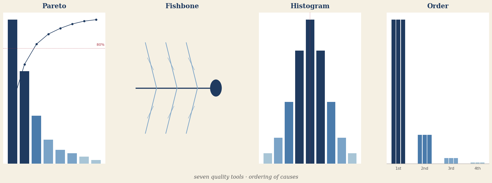
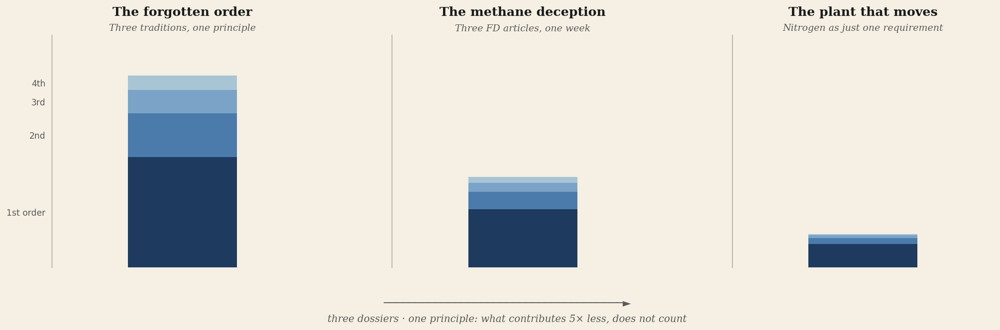
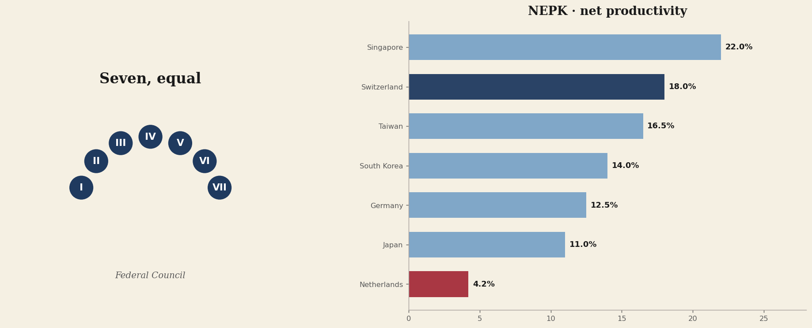
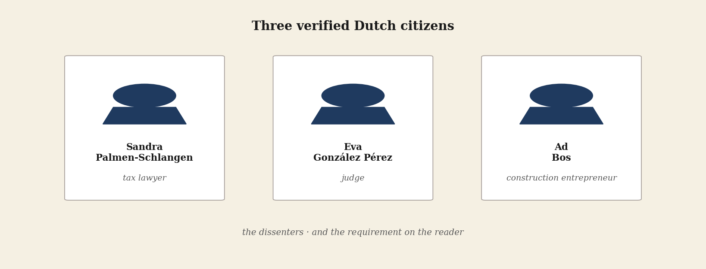

This edition has a rhythm. Four parts that build on each other. Read them in sequence — or pick the part that draws you in. Each article stands on its own.
The instrument
The basis — what is order, where does it come from, and what has it earned in money for those who used it.

Letter to the reader
Edition 5 delivers no opinion but an instrument.
七つ道具 — The Seven That Made the Difference
Kaoru Ishikawa's seven quality instruments, plus order analysis from steel construction. The instrument with which Japan overtook us.
The success formula we have unlearned
Japan, Korea and China overtook us because they embraced the instrument we threw away.
The diagnosis
The principle and two dossiers — methane and nitrogen — in which the Dutch press and policy place the weight upside down.

The forgotten order
Three traditions, one principle: what contributes 5× less than the main factor does not count.
The Methane Misdirection
Three FD pieces in one week, three inversions of weight, four demands on the press.
The Plant That Moves
Nitrogen, drought, climate shift, fragmentation — and the policy that sees only one of the four.
The design answer
What a country has that did the design right: Switzerland since 1848, with productivity figures from twenty-one countries.

The people and the task
Three verified Dutch citizens who kept the compass in an order-inverted world — and what you can do with this instrument.
